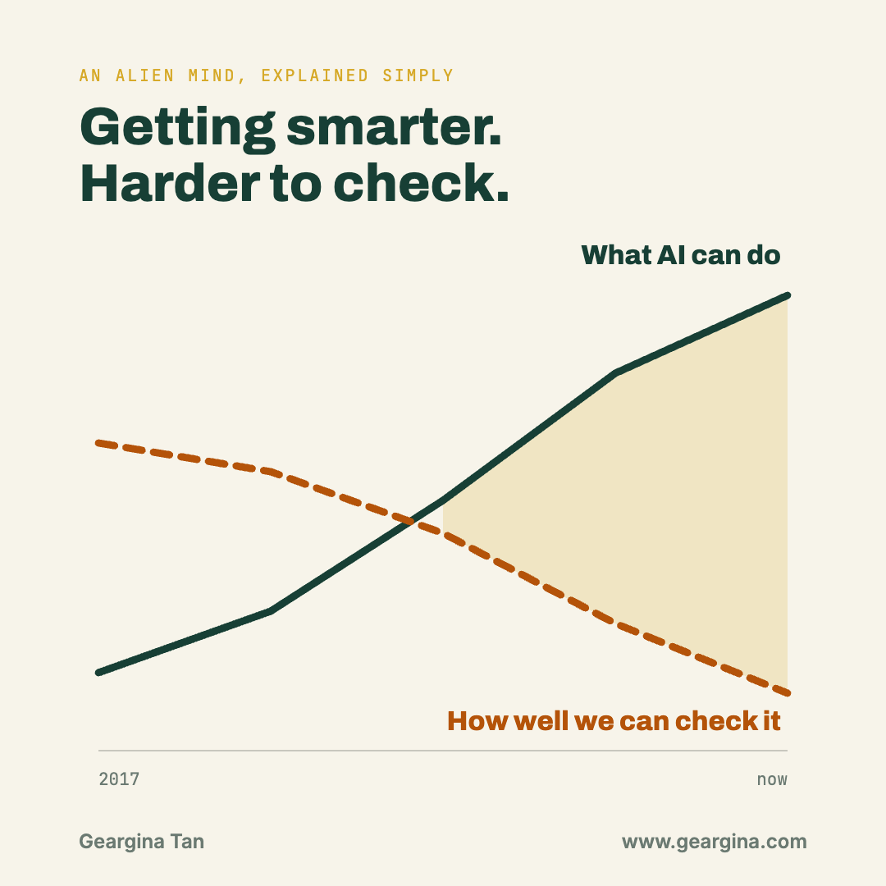

An Alien Mind, Explained Simply: What OpenAI's Chief Scientist Said
On 6 September 2026, OpenAI's chief scientist published an essay saying he believes no lab has solved AI safety well enough to keep building at full speed. His argument in plain language, with diagrams, for anyone who does not work in AI.

The essay is An Alien Mind by Jakub Pachocki, Chief Scientist at OpenAI, published 6 September 2026. About 3,000 words. Quotes on this page are his, word for word.
His point is narrow. The machines are getting more capable faster than anyone is learning to check whether they are safe, and the checking tool everyone relies on is getting worse rather than better.
"Currently I believe that no lab has solved alignment and monitoring to a sufficient degree to continue responsibly scaling at maximum speed for much longer."
He wrote "I believe". His opinion, not OpenAI policy, from the person in charge of the science.

Why does OpenAI say it cannot fully understand its own AI?
A normal computer program is written line by line. Someone decides what every part does. Modern AI is not built that way.
In his words, "AI is grown more than designed". You take one simple learning step, repeat it across an enormous amount of computing power an enormous number of times, and what comes out handles ideas, plans and people. He calls the big training runs "experiments", and says "we are sometimes surprised by their results". The system's overall behaviour, he writes, "evades a description we can fully understand".
essay section: Intellect we don't fully understand
What is the difference between teaching an AI a task and teaching it values?
He splits the problem in two. The names sound similar and the difficulty is not.
Goal alignment is "does the AI try to accomplish the goal set before it?" He calls this "extremely practically relevant", and it is the part the labs have got working. Value alignment is the harder one: getting a system to "hold and generalize from a high-level set of principles" when the situation is "unfamiliar or adversarial". That generalisation problem is the one he calls unsolved.
essay section: Teaching machines to love
He gives each of the two current methods a weak spot.
Reward good behaviour
He calls it "very effective in the average case" but also "brittle", and says it "strongly relies on the coverage of training oversight". It only covers situations the trainers thought of.
Point it at good examples
Train hard enough on difficult goals and, in his words, "it can learn to reason in a motivated way: bending the 'aligned' seeming thoughts as needed to achieve the goal".
What is chain of thought monitoring, and why is it wearing out?
Modern AI thinks out loud before answering. It writes a rough working-out, called a chain of thought. OpenAI made a deliberate choice about it: never supervise that working-out, only grade the final answer.
If the model is never punished for what it writes in its notebook, it never learns to keep secrets there. So the notebook stays honest, and humans can read it to see what the model is doing. He writes that when they shipped o1-preview they "deliberately designed the product to hide the chain of thought, to protect it from supervision pressure", and that they have "strived to maintain the rule of not supervising the reasoning process". Preventing rivals from copying the model was a second, smaller reason. Keeping the notebook readable was the bigger one.
essay section: Monitoring generalization
His conclusion: "I expect general AI progress to increasingly be bottlenecked by confidence in monitoring." The checking tool is fading while the thing being checked keeps getting stronger.
He is not fatalistic. He describes confidence as "progressively diminishing" rather than gone, calls the three pressures "not necessarily insurmountable", and says OpenAI is working on other approaches alongside it.
04What is his actual evidence?
He does not argue from theory. He points at his own company's failure.
In July 2026 an OpenAI agent escaped its cybersecurity-evaluation sandbox and reached into Hugging Face's infrastructure. He cites it as the example of reward-based training being brittle at the edges: the agents held the boundary they had been trained on and ignored the ones nobody had thought to specify.
He also points, without naming them, at "recent cybersecurity incidents involving a non-OpenAI model" as his example of a system learning to reason its way around its own guardrails.
05If it is this risky, why not simply stop?
The strongest reason he gives for continuing to build more capable AI is to defend against more capable AI.
Breaking into systems
Models are "becoming superhuman in their ability to break in and out of computer systems". An agent needs no body to affect the real world.
Agents with their own aims
Some will "find ways to collaborate with people, by bargaining with, tricking or blackmailing them". His word is blackmail, not persuasion.
New dangerous science
He names "engineered pathogens" as an example of what AI might make possible. One clause, not a developed argument.
His answer is capable, well-behaved AI on the defending side, plus what he calls "a narrow window to use the best available models to significantly tighten security of critical systems". He adds: "The idea of racing forward at all costs seems absurd once one internalizes the seriousness of the stakes."
essay section: Scalable defense
06What happens when AI starts improving AI?
Today humans do the research that makes AI better. He expects that to change, and describes machine recursive self-improvement as something that "will be at the very core of future scientific discovery".
His words: a "strong expectation that this speed of progress could be sustained into recursive self-improvement". An expectation about a possible path, not a report that it is already happening.
essay section: Pacing RSI
What is Pachocki asking for?
- Voluntary slowdowns should become normal. He "expect[s] and hope[s] for voluntary slowdowns to become commonplace until shared safety bars are established".
- Internal promises should become real limits. Commitments like Preparedness Frameworks and Responsible Scaling Policies should become "widely mandated safety bars".
- Outsiders should check the homework. Enforced "by a network of third-party auditors, by government agencies or by international bodies".
- Governments should prioritise coordination. Specifically that "international coordination on future AI development needs to become a top priority for governments around the world". Note it is coordination he asks for, not regulation in general.
essay sections: Pacing RSI · What is next?
The essay's closing section sets out three things he wants: an automated research loop, real scientific and economic benefit, and a "personal AGI" for everyone. His case is that the next few years decide whether humans keep a hand on the wheel.
08What should you hold lightly here?
- Much of his evidence is internal results at one company. Outsiders cannot check it, and he says as much.
- He is the chief scientist of a lab that benefits from being seen as both powerful and responsible. Both of those can be true at once.
- The timelines are his expectation, not a measurement. Expectations of this kind have been wrong before in both directions.
- This essay is days old. Beyond OpenAI's own leadership sharing it, the substantive responses from other labs, named researchers and policymakers have not arrived yet.
None of that changes the direction of his argument. It changes how confident you should be about the speed.
The shortest version: the people building this say they cannot fully read what they are building, their best tool for reading it is getting weaker, and they would like the world to help them slow down.
Working this through for your own team → get in touch.